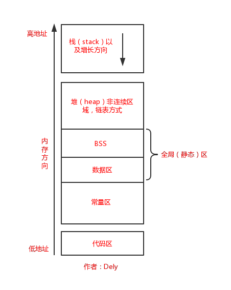

堆和栈的概念区别
堆： 是大家共有的空间，分全局堆和局部堆。全局堆就是所有没有分配的空间，局部堆就是用户分配的空间。堆在操作系统对进程 初始化的时候分配，运行过程中也可以向系统要额外的堆，但是记得用完了要还给操作系统，要不然就是内存泄漏。堆里面一般 放的是静态数据，比如static的数据和字符串常量等，资源加载后一般也放在堆里面。一个进程的所有线程共有这些堆 ，所以对堆的操作要考虑同步和互斥的问题。程序里面编译后的数据段都是堆的一部分。
栈： 是个线程独有的，保存其运行状态和局部自动变量的。栈在线程开始的时候初始化，每个线程的栈互相独立，因此 ，栈是 thread safe的。每个c++对象的数据成员也存在在栈中，每个函数都有自己的栈，栈被用来在函数之间传递参数。操作系统在切换线程的时候会自动的切换栈，就是 切换ss/esp寄存器。栈空间不需要在高级语言里面显式的分配 和释放。支持的数据有限，一般是整数，指针，浮点数等系统直接支持的数据类型， 并不直接支持其他的数据结构。
预备知识—程序的内存分配
1、栈区（stack）— 由编译器自动分配释放，存放函数的参数值，局部变量的值等。其操作方式类似于数据结构中的栈。
2、堆区（heap） — 一般由程序员分配释放， 若程序员不释放，程序结束时可能由OS回收。注意它与数据结构中的堆是两回事，分配方式倒是类似于链表。
3、全局（静态）区包含下面两个分区：
4、文字常量区 —常量字符串就是放在这里的。程序结束后由系统释放。
5、程序代码区—存放函数体的二进制代码。

/*
static与const组合：在每个文件都需要定义一份静态全局变量。
extern与const组合:只需要定义一份全局变量，多个文件共享。
static和extern定义的变量都在全局（静态）区
*/
//静态变量
static LMClass *obj4 ;
//全局静态变量
//extern作用:只是用来获取全局变量(包括全局静态变量)的值，不能用于定义变量
extern NSString *externString = @"dddd";
int myInt = 20;//全局初始化区（数据区）
NSString *str;//全局未初始化区（BSS区）
-(void) testString{
NSString *string = @"dddd";
NSLog(@"dddd -> %p",@"dddd"); //dddd是常量字符串，存在常量区
NSLog(@"string->%p",string); //string指针存在栈区， 指针指向常量区
NSLog(@"Int -> %u",0xa5a5a5a5);
//string2在栈中，指向堆区的地址
NSString *string2 = [[NSString alloc] initWithFormat:@"dddd"];
NSLog(@"string2-> %p",string2);
NSString *string3 = [NSString stringWithFormat:@"dddd"];
NSLog(@"string3 -> %p", string3);
// string3 = nil;
NSLog(@"string3 -> %p", string3);
//string2 和 string3 都是指向同一地址
// string2 = nil;
NSString *string4 = [string3 copy];
//string4 也和 string2,3地址一样
NSLog(@"string4 -> %p", string4);
//externString是指向常量区
NSLog(@"externString ->%p", externString);
}
dddd -> 0x104420b70
string->0x104420b70
Int -> 2779096485
string2-> 0xa000000646464644
string3 -> 0xa000000646464644
string3 -> 0xa000000646464644
string4 -> 0xa000000646464644
externString ->0x10ecfab70
这图片是在当前控制器po的

这个我在没有创建上面的控制器时po的。

0xa000000646464644po出也是dddd。
所以我的理解是string2,3,4的指向堆区，因为字符串存在常量区，所以它们都是指向常量区的字符串。
但是为什么我打印的常量dddd -> 0x104420b70，和string2，3，4的0xa000000646464644不一样。希望有大神能告诉我一下。
-(void) testObject{
//对象的创建都是存放在堆区中，如果是局部变量，因为ARC的存在，所以不用程序员再手动释放，过了作用域obj1，2，3指向的内存都会被释放。
LMClass *obj1 = [[LMClass alloc] init];
NSLog(@"obj1->%p-----obj1指针%p",obj1, &obj1);
LMClass *obj2 = [[LMClass alloc] init];
NSLog(@"obj2->%p-----obj2指针%p",obj2, &obj2);
LMClass *obj3 = [obj2 copy];
NSLog(@"obj3->%p-----obj3指针%p",obj3, &obj3);
//obj2释放了，原来obj2指向的内存成为空闲内存
obj2 = nil;
}
obj1->0x6100000148b0-----obj1指针0x7fff57aecc18
obj2->0x618000014b30-----obj2指针0x7fff57aecc10
obj3->0x600000014b80-----obj3指针0x7fff57aecc08
(lldb) po obj2
nil
(lldb) po 0x618000014b30
107202383792720 //对象原来的地址释放掉
(lldb) po &obj2
0x00007fff57aecc10